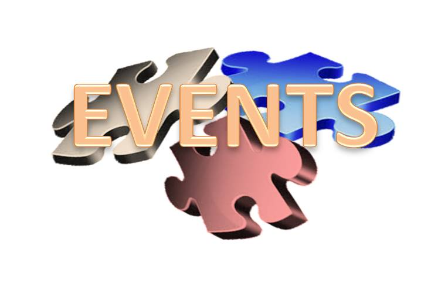
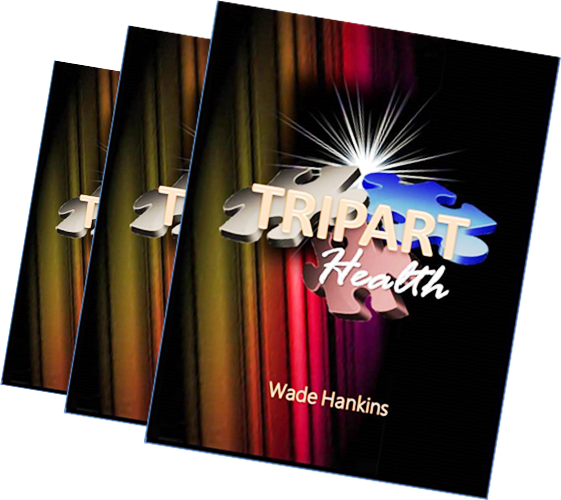

  <!-- Second Featurette -->
  <div class="featurette" id="tri-part">

      <div class="row">
        <div class="col-md-9">
					
          <!-- <h2 class="featurette-heading">The Tri-Part being <span class="text-muted">Spirit, Soul, and Body</span></h2> -->
					
          <h3>Tri-Part</h3>
          <p>TRIPART is a healing immersion experience. In addition to the teachings, all sessions will include the opportunity for you to experience Healing Prayer, a PEMF Session, and the Sound of Wholetones Healing Frequencies.</p>

          <h3>Prayer</h3>
          <p>Healing is “sozo” in Greek. It means salvation, which basically means being saved and restored to the wholeness of God’s order and well-being by the Holy Spirit. Healing is for every aspect of human life. That means healing of the spirit, soul, and body- the whole person and his environment. Jesus gave us the ministry of healing to restore people to health. Tri-Part employs Healing Prayer.</p>

					
          <h3>PEMF</h3>
          <p>Pulsed Electromagnetic Fields is needed for your health. The earth frequencies (0-30 Hz range) match the frequencies of your body, your mind, your tissues and your cells. A PEMF device used 2 times a day for 8 minutes will energize your cells, increase circulation, oxygenation, hydration, detoxification, and better absorption of nutrients.</p>

					<p>Tri-Part employs a PEMF device with Healing Prayer. Sessions include resting mat for full body, localized wrap or spot applicators enhance oxygen circulation for skin and internal tissue, cellular metabolism and well-being. The fourth application, facial LED light carries the same pulsed signal that we feel on the earth.</p>

					
          <h3>Wholetones</h3>
          <p>Wholetones Healing Frequency Music uses seven musical tones uncovered in the music of King David. These historical healing frequencies are the same ones used by David to bring healing and deliverance to King Saul on his lyre. Seven unique songs recorded in seven unique frequencies are aligned with specific parts of your body to bring healing. Seven discs include: Open Door (396Hz), Desert Sojourn (417Hz), The Key of David (444Hz), Transformation (528Hz), The Bridge (639Hz), Great Awakening (741Hz), The Majestic (852Hz).</p>

					<p>These healing tones may be the very ones that were given to King David by God Himself! Tri-Part employs Wholetones Healing Music Frequencies too. The three combined are a powerful blessing!</p>
          <br>
					<div class="panel-group">
            <div class="panel panel-default">
              <div class="panel panel-heading">
                Tripart Event
              </div>
              <div class="panel-body">
                <p>TRIPART IMMERSION is a journey designed for God’s people to pursue the transformation of life through “God’s Light” where the Seven Spirits of God, the “Fullness of the Spirit” produces healing and health, wholeness in spirit, soul, and body.</p>

      					<p>You will get prophetic insights with practical applications that will lead you to living “fully alive” as a “New Creation.”  While there is no registration cost, please plan on making an offering that Holy Spirit puts on your heart at the meeting or on the donation page of this web site.</p>
              </div>
            </div>
					  <div class="panel panel-primary">
							<div class="panel panel-heading">
								Registration Information
							</div>
					    <div class="panel-body">
								<p>Online Registration Required</p>
								<p>Where: Call 816.260.5000 for Location  <br>
								When: Wednesdays starting October 5, 2016 <br>
								Time: 7:00 - 9:00 PM</p>

								<h3>Registration Form</h3>
								<form class="form-inline" action="https://formspree.io/{{ site.email }}" role="form">
								  <div class="form-group">
								    <label for="exampleInputName2">Name</label>
								    <input type="text" class="form-control" id="exampleInputName2" placeholder="Jane Doe">
								  </div>
								  <div class="form-group">
								    <label for="exampleInputEmail2">Email</label>
								    <input type="email" class="form-control" id="exampleInputEmail2" placeholder="jane.doe@example.com">
								  </div>
								  <button type="submit" class="btn btn-primary">Register</button>
								</form>
			        </div>

							</div>

					  </div>
				</div>

        <div class="col-md-3 sidebar">

					{% include sidebar.html %}

        </div>
      </div>
		</div>
